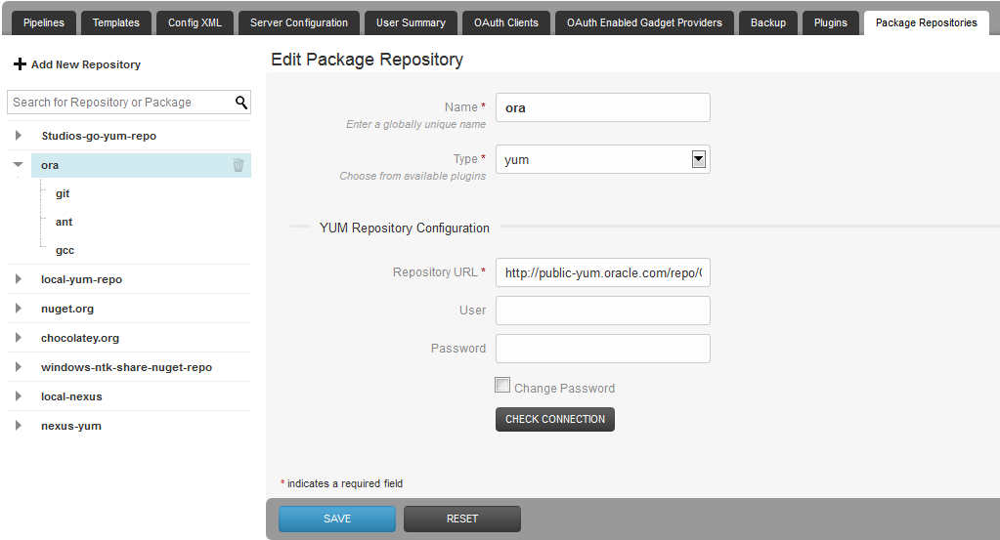
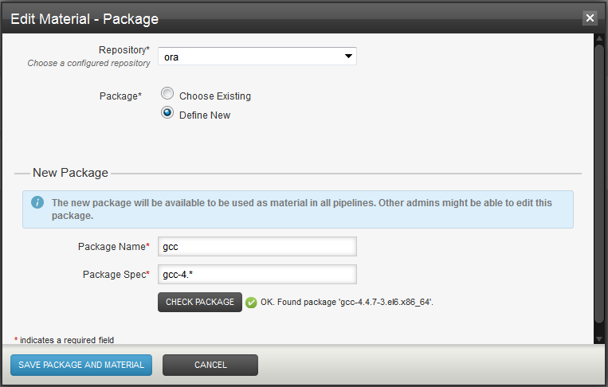
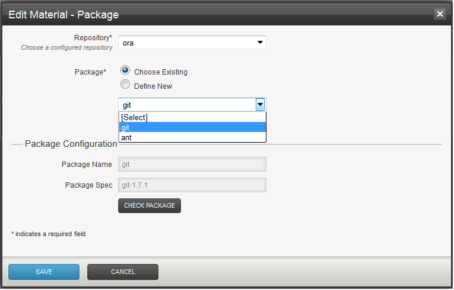
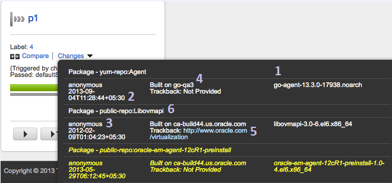

Package Material
Introduction
Pipelines in Go can poll packages in repositories similar to how they poll version control systems. A build typically consumes source code maintained in a version control system (VCS/SCM). What about a typical deployment? Increasingly, the input for deployments is the build result packaged as:
- jar, war or ear file in case of Java
- nuget/ chocolatey package in case of .NET
- Linux system package (e.g rpm, deb) in case of any application platform
- Other application level package formats like gem, npm,phar, wheel etc.
Supported Packages
Repositories, Packages and Materials
Repository Definition
Note:
- The repository name is not used by the package material plugin - it is used by Go to construct the material name.
- Two package repositories cannot have the same name.
- Use the check connection button to ensure that Go can work with this repository.

Package Definition

Unlike other VCS/SCM materials, the material definition in case of packages is not contained within the pipeline definition. Many pipelines may have material definitions refering to the same package. Here is how we associate an existing package as material for a pipeline.
Note: Each package definition must resolve to exactly one package on the respository, else the pipeline will not run. In order to set up a pipeline that polls for multiple packages, configure each package as a separate material.
Each package material plugin defines a subset of its properties as a package fingerprint. e.g. in case of the bundled yum plugin this subset consists of Repository URL and Package Spec (it excludes repository username and password). Repository and Package names are not part of package fingerprint. It is not permitted to multiple packages having the same package fingerprint. An attempt to do so will result in an error message like this:
The following error(s) need to be resolved in order to perform this action:
Cannot save package or repo, found
duplicate packages. [Repo Name: 'orchard', Package Name: 'apple'], [Repo Name: 'orchard', Package Name: 'orange']
Sample XML Configuration
<repository id="1ce5c205-977f-4c0e-ada4-882030580eed" name="ora">
<pluginConfiguration id="yum" version="1" />
<configuration>
<property>
<key>REPO_URL</key>
<value>http://public-yum.oracle.com/repo/OracleLinux/OL6/latest/x86_64</value>
</property>
</configuration>
<packages>
<package id="840b0b60-bd29-489d-b5ea-ccff5f6459a9" name="gcc" autoUpdate="false">
<configuration>
<property>
<key>PACKAGE_SPEC</key>
<value>gcc-4.*</value>
</property>
</configuration>
</package>
</packages>
</repository>
...
<pipelines group="showcase">
<pipeline name="dependsOnGcc">
<materials>
<package ref="840b0b60-bd29-489d-b5ea-ccff5f6459a9" />
</materials>
...
Value stream modeling tip
- The first scenario is where the package is published from some pipeline in Go. Say pipeline X publishes package P to an external repo and pipeline Y consumes P. To trigger Y after publication of P, there are two options:
- Pipeline dependency: X becomes a material for Y. Y resolves the exact version of P and downloads it on its own (although this tip may be used to pass package version information from X to Y). X will appear as an upstream component of Y in the value stream map.
- Package material: Y adds P as a package material. Y no longer has to resolve P.
- The second scenario is where Go does not know about how/who published the package. Perhaps it got published by a job in Jenkins. Or perhaps the package is an open source package on a public repository on the internet. In this case the only option is to use a package material. Go helps you trace back to the external origin of the package if the package creator adds trackback information to the package metadata. The details of this will vary by plugin. In case of the bundled yum plugin, we use the URL field in rpm metadata for this.
Permissions
Polling
Package information display
- Package revision (e.g. gcc-4.4.7-3.el6.x86_64)
- Package build time
- Name of package creator (if available)
- Package comment
- Trackback URL - Typically an absolute URL that indicates what job (in Go or otherwise) created the package.
- Package - material name (i.e. repo-name:package-name)

Downloading the package
- GO_PACKAGE_<REPO-NAME>_<PACKAGE-NAME>_LABEL
- GO_REPO_<REPO-NAME>_<PACKAGE-NAME>_REPO_URL
- GO_PACKAGE_<REPO-NAME>_<PACKAGE-NAME>_LOCATION
[go] Start to execute task: <exec command="/bin/bash" >
<arg>-c</arg>
<arg>curl -o /tmp/gcc.rpm $GO_PACKAGE_ORA_GCC_LOCATION</arg>
</exec>
When the task executes on the agent, the environment variables get subsituted as below:
[go] Start to execute task: <exec command="/bin/bash" >
<arg>-c</arg>
<arg>curl -o /tmp/gcc.rpm $GO_PACKAGE_ORA_GCC_LOCATION</arg>
</exec>.
...
[go] setting environment variable 'GO_PACKAGE_ORA_GCC_LABEL' to value 'gcc-4.4.7-3.el6.x86_64'
[go] setting environment variable 'GO_REPO_ORA_GCC_REPO_URL' to value 'http://public-yum.oracle.com/repo/OracleLinux/OL6/latest/x86_64'
[go] setting environment variable 'GO_PACKAGE_ORA_GCC_PACKAGE_SPEC' to value 'gcc-4.*'
[go] setting environment variable 'GO_PACKAGE_ORA_GCC_LOCATION' to value 'http://public-yum.oracle.com/repo/OracleLinux/OL6/latest/x86_64/getPackage/gcc-4.4.7-3.el6.x86_64.rpm'
...
Or, to simply pass it as an argument to a deploy script on a remote server
<exec command="/bin/bash">
<arg>-c</arg>
<arg>ssh server "cd /to/dest/dir;deploy.sh $GO_PACKAGE_ORA_GCC_LOCATION"</arg>
</exec>
Important: Please note that if you change repository credentials and then try to re-trigger (redeploy) an old package, the published environment variables will not reflect new credentials.
Publishing a Package
Package Dependencies
yum install componentA-1.2.0-b234-noarchdo the resolution of componentB for you.